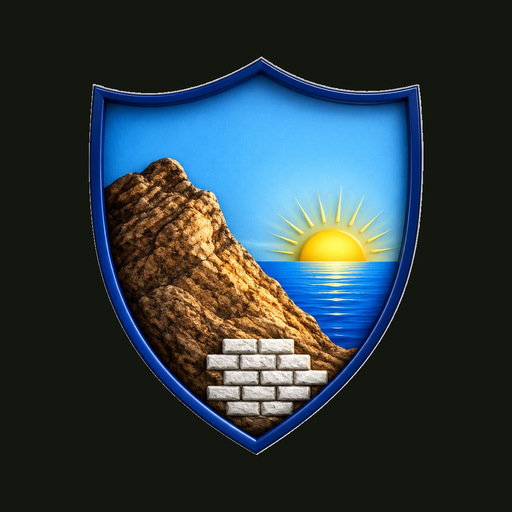

מעקב מחלקה
מתקינים פעם אחת למסך הבית,
ופותחים מהאייקון כמו כל אפליקציה.
1
פותחים את תפריט השיתוף
לוחצים על שלוש הנקודות ליד שורת הכתובת, ואז על ״שיתוף״.
›Shareשיתוףבגרסה ישנה יותר של אייפון: כפתור השיתוף נמצא ישירות בתחתית המסך.
2
בוחרים ״הוספה למסך הבית״
גוללים מעט למטה ברשימה עד שמופיעה האפשרות.
Add to Home Screenהוספה למסך הבית3
לוחצים ״הוספה״ למעלה
אם מופיע מתג ״פתיחה כיישום אינטרנט״, משאירים אותו דולק.
Addהוספה✓
התקנה בלחיצה אחת
הטלפון שלכם תומך בהתקנה ישירה.
1
פותחים את התפריט של כרום
לוחצים על שלוש הנקודות בפינה העליונה.
Menuתפריט2
בוחרים ״התקנת אפליקציה״
בחלק מהטלפונים האפשרות נקראת ״הוספה למסך הבית״.
Install appהתקנת אפליקציה3
מאשרים ״התקנה״
האייקון יופיע במסך הבית ובמגירת האפליקציות.
אחרי ההתקנה: פותחים מהאייקון במסך הבית ומזינים את קוד הגישה של המחלקה.